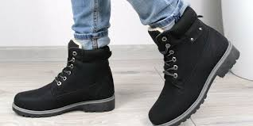

Зимняя обувь
Выбирая зимнюю обувь, следует в первую очередь обращать внимание на материал. Самый удачный выбор для любого сезона — обувь из натурального материала, которая позволит коже ног дышать и не будет препятствовать естественному теплообмену. Рекомендуется обувь из натуральной кожи, нубука, замши, текстиля. Привлекательными и приятными на ощупь являются изделия из замши, но, по сравнению с натуральной кожей, замша не так практична. В мокрую погоду и слякоть на ней могут оставаться следы соли или просто грязи. Альтернативой натуральной коже может быть кожзаменитель, но не в случае с зимней обувью. Такая обувь быстро потрескается на морозе, а в местах складок может и вовсе разорваться. К тому же тёплой её не назовёшь. Единственным преимуществом обуви из искусственной кожи является её цена, хотя при этом больше сезона она не прослужит. Правильно подобранная обувь способна решить множество проблем и значительно повысить общее ощущение комфорта в зимние месяцы.Если после нескольких дней носки новой обуви вы почувствовали, что ногам неуютно, — либо меняйте обувь, либо обратитесь в ортопедический салон для подбора соответствующих супинаторов или стелек